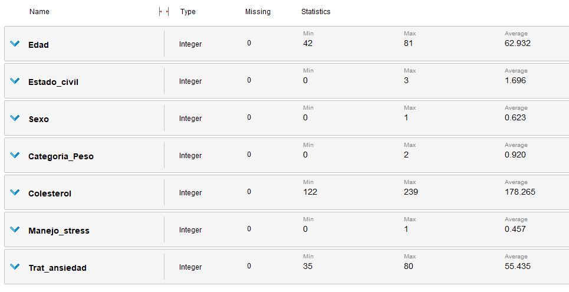
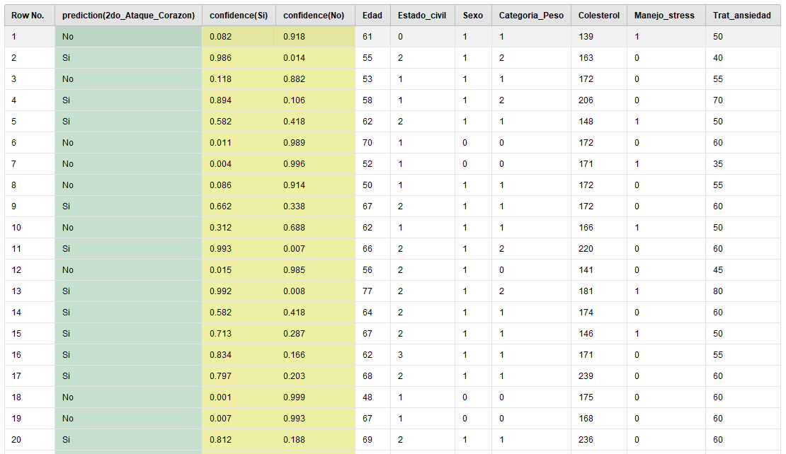
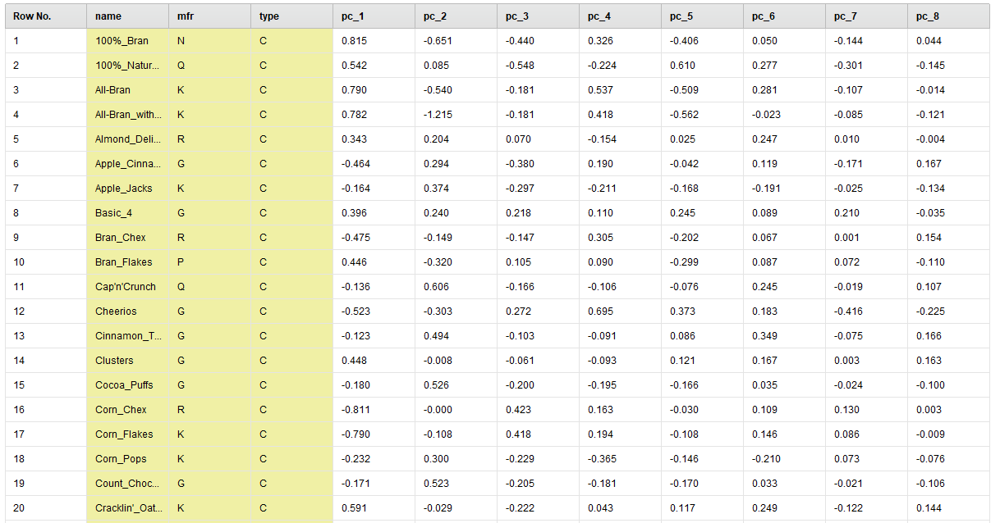

Exercises
Linear regression comparison
The objective of this exercise is to visualize and
compare the results of applying linear regression in two
different ways, using the same data. All the necessary calculations
were performed on a spreadsheet which can be found
here.
This example dataset
is composed of just one input variable "x" and one output
variable "y"
x = {1, 3, 2, 4, 6, 5}
y = {1, 2, 3, 3, 2, 5}
A dot graph of the data can be seen in Figure 1.
The model will be a straight line defined by the equation:
y = b0 + b1 * x
Where b0 and b1 are the coefficients we need to estimate.
The first method of calculating these coefficients will be
by using the following formulas:
b1 = ∑ (xi - mean(x)) * (yi - mean(y)) / ∑ (xi - mean(x))2
b0 = mean(y) - b1 * mean(x)
This gives us the following coefficients:
b1 = 0.342857143
b0 = 1.466666667
By using these in the previous equation, we can now
plot the line that forms the model. This graph is shown in Figure 2.
Finally, we can calculate the RMSE to get an estimate of the accuracy
of this model:
RMSE = 1.101225868
The second method of calculating the coefficients involves applying
gradient descent. Starting from b0 = 0.0 and b1 = 0.0, we can recalculate
them at every epoch by performing:
b0(next epoch) = b0 - learn rate * prediction error
b1(next epoch) = b1 - learn rate * prediction error
Using a learn rate of 0.01, the final values of the
coefficients after 24 epochs is:
b1 = 0.638197357
b0 = 0.217811901
This gives us another model for our data. The resulting line graph
can be seen in Figure 3. As we can see, this model is slightly different from
the previous one. The RMSE for this model is:
RMSE = 1.230204322
The higher error indicates that the first model was a bit more accurate,
even though both lines like a good approximation to the original dots.
We can presume that this is possibly due to the limited number of epochs
in the gradient descent. Ideally, we would want to continue the process
until there is no significant reduction in the prediction errors.

Fig.1

Fig.2

Fig.3
Dataset "Titanic"
The objective of this exercise is to visualize and compare the results of applying linear regression in two different ways, using the same data. All the necessary calculations were performed on a spreadsheet which can be found here. This example dataset is composed of just one input variable "x" and one output variable "y"
x = {1, 3, 2, 4, 6, 5}
y = {1, 2, 3, 3, 2, 5}
A dot graph of the data can be seen in Figure 1. The model will be a straight line defined by the equation:
y = b0 + b1 * x
Where b0 and b1 are the coefficients we need to estimate. The first method of calculating these coefficients will be by using the following formulas:
b1 = ∑ (xi - mean(x)) * (yi - mean(y)) / ∑ (xi - mean(x))2
b0 = mean(y) - b1 * mean(x)
This gives us the following coefficients:
b1 = 0.342857143
b0 = 1.466666667
By using these in the previous equation, we can now plot the line that forms the model. This graph is shown in Figure 2. Finally, we can calculate the RMSE to get an estimate of the accuracy of this model:
RMSE = 1.101225868
The second method of calculating the coefficients involves applying gradient descent. Starting from b0 = 0.0 and b1 = 0.0, we can recalculate them at every epoch by performing:
b0(next epoch) = b0 - learn rate * prediction error
b1(next epoch) = b1 - learn rate * prediction error
Using a learn rate of 0.01, the final values of the coefficients after 24 epochs is:
b1 = 0.638197357
b0 = 0.217811901
This gives us another model for our data. The resulting line graph can be seen in Figure 3. As we can see, this model is slightly different from the previous one. The RMSE for this model is:
RMSE = 1.230204322
The higher error indicates that the first model was a bit more accurate, even though both lines like a good approximation to the original dots. We can presume that this is possibly due to the limited number of epochs in the gradient descent. Ideally, we would want to continue the process until there is no significant reduction in the prediction errors.
In this exercise we will be processing messy data from the popular "Titanic" dataset (taken from Kaggle), so that it is ready to use for bulding a model that can predict whether a given passenger survived or not. However, this is focused solely on preprocessing of data and not modelling.
The exercise was done in Python, using libraries such as Numpy, Pandas, sklearn, and more. The entire process is documented in this Kaggle notebook.
Prediction of second cardiac arrest
This exercise is based on the case of a cardiologist who
wishes to offer special treatments to patients of his who
have an increased risk of suffering a second heart attack, in order
to reduce the risk.
The doctor has access to the medical records of all his patients,
and wants to use these records to determine those who would benefit
the most from these treatments. To this end, we will generate
a logistic regression model with the help of RapidMiner.
The database of medical records contains two datasets. The first one
contains the records of patients who have already suffered a heart attack,
with an attribute to indicate whether they had a second one or not.
This dataset wil be used to train the model. The second dataset contains
records of patients who have suffered one, but not yet two heart attacks.
This is the data that will be used for prediction.
When we import the data into RapidMiner, first we need to convert the label
attribute ("2do_Ataque_Corazon") from polynominal into binominal, since we want
to predict between two classes (yes/no). Then we also want to make sure that every other
attribute in the dataset has only numerical values, which they do.
This is necessary since it's the only type of value accepted by the
logistic regression operator. Finally, we also need to check that the ranges
of the values seen in the training and testing datasets are similar.
This is important because a large amount of data is required to train a
model, and there may not be enough useful data locally. It may be
necessary to use data from other places in the world for training,
therefore it is necessary to verify that the examples are similar to
those for which the model will attempt to predict. If not, the model
would be trained with data that does not match the local data,
and it would give incorrect results.
The statistics of the attributes can be seen in Figure 1 for the training
dataset, and in Figure 2 for the prediction dataset. We can see here that the ranges
are indeed the same.
With all that done, we can now finish the RapidMiner process, which can
be seen in Figure 3. Out of the 690 patients in the testing
dataset, the model predicted that 350 will suffer a second
heart attack more likely than not. As an example, the confidence
of the first 20 predictions is shown in Figure 4.
The doctor would like to treat as many patients as he can,
even if their risk is low. But still, resources are limited.
Given that only a limited number of patients can receive the
treatment, in a real system it would be necessary to define a
threshold for the confidence
of the model's prediction. Only patients whose prediction of having a
second attack is above the confidence threshold would be treated,
since those would be the ones most at risk.
Fig.1

Fig.2
Fig.3

Fig.4
Cereal nutrition data analysis
In this exercise we will be working with a dataset containing
information about 80 different cereal products. Most of the
fields in the dataset are related to the nutrients found in
these cereals, such as calories, protein, sodium, and more.
The dataset contains 16 attributes, 13 of which are numerical.
The objective of this exercise is to reduce these 13 attributes
into a smaller subset, applying Principal Component Analysis
in RapidMiner.
The first thing we need to do when importing the data is to
filter the attributes "name", "manufacturer", and "type" since
they are non-numerical, meaning that they can't be used for PCA.
PCA also requires that there be no missing values, so
we need to replace them. Luckily, there are only 4 missing values
in the entire dataset, so we can replace them with averages without
it having a significant impact.
The last thing to do before applying PCA is normalizing the data.
If there was one atribute for which the range was hundreds of times larger
than the ranges of other ones, then that attribute would form
most of the variance in the dataset, and PCA would wrongly identify
it as the most significant one. PCA is very sensitive to scaling
in the data, so it's necessary to apply a range transformation
to make sure that it doesn't overlook any attributte.
For the PCA operator we select "keep variance" as the type
of dimensionality reduction, since we want a subset of attributes
that account for a certain amount of variance in the dataset,
but we don't know beforehand how many principal components it would
take. For the variance threshold we use the default 0.95. The process
is shown in Figure 1.
When we run the process, we can see the resulting data in Figure 2,
along with the eigenvalues in Figure 3. The cumulative variance of
the first 8 principal components was enough to account for 97%
of the dataset's total variance. In Figure 4 we can see the eigenvectors,
which show us how the principal components are composed. We want
to identify the original attributes which had the most
weight in these PCs. To do that we can sort the eigenvalues
for each PC, and then select the 2 or 3 most impactful attributes.
If we select the 2 most significant attributes for each of
the first 8 PCs, we end up with a subset of 8 attributes:
"shelf", "potass", "sugars", "calories", "sodium", "carbo",
"vitamins" and "protein".
For this example exercise, we were able to reduce a set of
13 attributes down to just 8 (more than a third of the original
amount). It may not mean much with such a small number of attributes,
but with very large datasets that contain hundreds or thousands of
attributes it would make a huge difference in terms of the
computational performance of various machine learning algorithms.
This is why PCA is such a widely used tool for dimensionality reduction.
Fig.1

Fig.2
Fig.3
Fig.4
This exercise is based on the case of a cardiologist who wishes to offer special treatments to patients of his who have an increased risk of suffering a second heart attack, in order to reduce the risk. The doctor has access to the medical records of all his patients, and wants to use these records to determine those who would benefit the most from these treatments. To this end, we will generate a logistic regression model with the help of RapidMiner.
The database of medical records contains two datasets. The first one contains the records of patients who have already suffered a heart attack, with an attribute to indicate whether they had a second one or not. This dataset wil be used to train the model. The second dataset contains records of patients who have suffered one, but not yet two heart attacks. This is the data that will be used for prediction.
When we import the data into RapidMiner, first we need to convert the label
attribute ("2do_Ataque_Corazon") from polynominal into binominal, since we want
to predict between two classes (yes/no). Then we also want to make sure that every other
attribute in the dataset has only numerical values, which they do.
This is necessary since it's the only type of value accepted by the
logistic regression operator. Finally, we also need to check that the ranges
of the values seen in the training and testing datasets are similar.
This is important because a large amount of data is required to train a
model, and there may not be enough useful data locally. It may be
necessary to use data from other places in the world for training,
therefore it is necessary to verify that the examples are similar to
those for which the model will attempt to predict. If not, the model
would be trained with data that does not match the local data,
and it would give incorrect results.
The statistics of the attributes can be seen in Figure 1 for the training
dataset, and in Figure 2 for the prediction dataset. We can see here that the ranges
are indeed the same.
With all that done, we can now finish the RapidMiner process, which can be seen in Figure 3. Out of the 690 patients in the testing dataset, the model predicted that 350 will suffer a second heart attack more likely than not. As an example, the confidence of the first 20 predictions is shown in Figure 4.
The doctor would like to treat as many patients as he can, even if their risk is low. But still, resources are limited. Given that only a limited number of patients can receive the treatment, in a real system it would be necessary to define a threshold for the confidence of the model's prediction. Only patients whose prediction of having a second attack is above the confidence threshold would be treated, since those would be the ones most at risk.
In this exercise we will be working with a dataset containing information about 80 different cereal products. Most of the fields in the dataset are related to the nutrients found in these cereals, such as calories, protein, sodium, and more. The dataset contains 16 attributes, 13 of which are numerical. The objective of this exercise is to reduce these 13 attributes into a smaller subset, applying Principal Component Analysis in RapidMiner.
The first thing we need to do when importing the data is to
filter the attributes "name", "manufacturer", and "type" since
they are non-numerical, meaning that they can't be used for PCA.
PCA also requires that there be no missing values, so
we need to replace them. Luckily, there are only 4 missing values
in the entire dataset, so we can replace them with averages without
it having a significant impact.
The last thing to do before applying PCA is normalizing the data.
If there was one atribute for which the range was hundreds of times larger
than the ranges of other ones, then that attribute would form
most of the variance in the dataset, and PCA would wrongly identify
it as the most significant one. PCA is very sensitive to scaling
in the data, so it's necessary to apply a range transformation
to make sure that it doesn't overlook any attributte.
For the PCA operator we select "keep variance" as the type
of dimensionality reduction, since we want a subset of attributes
that account for a certain amount of variance in the dataset,
but we don't know beforehand how many principal components it would
take. For the variance threshold we use the default 0.95. The process
is shown in Figure 1.
When we run the process, we can see the resulting data in Figure 2,
along with the eigenvalues in Figure 3. The cumulative variance of
the first 8 principal components was enough to account for 97%
of the dataset's total variance. In Figure 4 we can see the eigenvectors,
which show us how the principal components are composed. We want
to identify the original attributes which had the most
weight in these PCs. To do that we can sort the eigenvalues
for each PC, and then select the 2 or 3 most impactful attributes.
If we select the 2 most significant attributes for each of
the first 8 PCs, we end up with a subset of 8 attributes:
"shelf", "potass", "sugars", "calories", "sodium", "carbo",
"vitamins" and "protein".
For this example exercise, we were able to reduce a set of
13 attributes down to just 8 (more than a third of the original
amount). It may not mean much with such a small number of attributes,
but with very large datasets that contain hundreds or thousands of
attributes it would make a huge difference in terms of the
computational performance of various machine learning algorithms.
This is why PCA is such a widely used tool for dimensionality reduction.